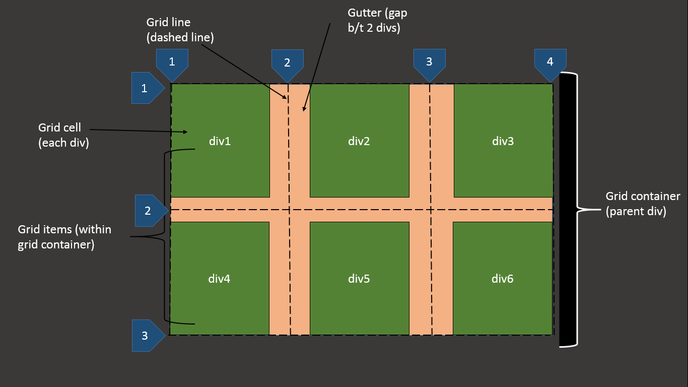
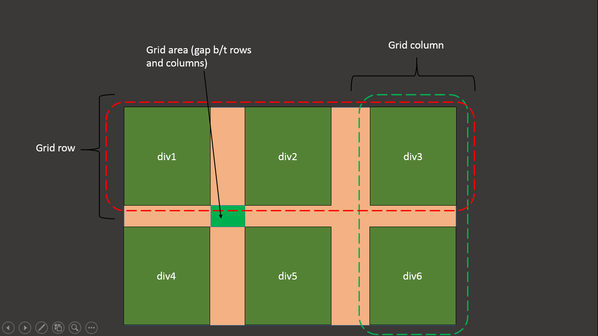

grid: it is used when we use two or more no. of div and arrange them in column and row in proper way.
To make parent div grid container we use property "display:grid;"
Advantages:
1. Two dimentional grid system.
2. css layout replaces float layout.
3. fast and clean code.
4. no need of css framework.
Structure of grid and terminology


Different properties of the grid
- grid-template-rows
- grid-template-columns
- grid-template-areas
- grid-template
- grid-row-gap
- grid-column-gap
- grid-gap
- justify-items
- align-items
- justify-content
- align-content
- grid-auto-rows
- grid-auto-columns
- grid-auto-flow
- grid-row-start
- grid-row-end
- grid-row
- grid-column-start
- grid-column-end
- grid-column
- grid-area
- justify-self
- align-self
- order
creating grid layout:
The below 2 properties are used to create grid:
1. grid-template-columns:100px 100px 200px; (It create 3 cloumn of given width i.e. 100px 100px and 200px)
another way to give:
grid-template-columns:1fr 2fr 3fr; (it create column of width in fraction)
grid-template-columns:repeat(2, 150px); (here we use repeat function,in which 2 is the no. of column and 150px is the width of each column)
grid-template-columns:repeat(3, 150px) 2fr 150px auto; (we can also use different combination of the values. the value "auto" for 4th column means the width of the 4th column is the whole space remain after first 3 column)
2. grid-template-rows:100px 100px 200px; (It create 3 rows of given height i.e. 100px 100px and 200px)
another way to give:
Similar to grid-template-columns
grid gap
The below 3 properties are used to give grid gap:
1. grid-row-gap:20px; (give space of 20px b/t rows)
2. grid-column-gap:20px; (give space of 20px b/t columns)
3. grid-gap:20px 25px; (It is a shorthand of the above 2 values, first value 20px is space b/t row and second value 25px is space b\t column)
grid items positioning (giving position of any grid item in grid container, it is given in grid item id or class, here we give value which is grid line)
The below 7 properties are used to give grid item position:
1. grid-row-start:2; (the item start from grid line no. 2 of row)
2. grid-row-end:3; (the item end at grid line no. 3 of row)
3. grid-row:2/3; ( It is shorthand of above 2 properties, the first is starting and the second is ending grid line no.,the item start from grid line no. 2 of row and end at grid line no. 3 of row)
4. grid-column-start:2; (the item start from grid line no. 2 of column)
5. grid-column-end:3; (the item end at grid line no. 3 of column)
6. grid-column:2/3; ( It is shorthand of above 2 properties, the first is starting and the second is ending grid line no.,the item start from grid line no. 2 of column and end at grid line no. 3 of column)
7. grid-area:2/2/3/3; ( it is shorthand of above properties, in following order row starting/column starting/row ending/column ending)
grid items spanning (in spanning a single grid item can cover place of two or more column or rows, the same properties of grid item positioning are used)
for example:
grid-column:2/5; (here this grid item not only cover single column, it covers columns from grid line no. 2 to 5 i.e. three columns)
another ways:
grid-column:2/ span 3; (here start from grid line no.2 and "span 3" means cover 3 columns)
grid-column:2/-1;(here start from grid line no.2 and cover all the columns after that to the end of grid container)
the similar way is use to cover row.
grid line naming (we can give name of grid line, the naming of grid line is given in property grid-template-columns and grid-template-columns)
In following way we can give naming of grid line
grid-template-columns:[column_name1_start] 100px [column_name1_end column_name2_start] 150px [column_name2_end]
we can use it as:
grid-column-start:column_name1_start;
grid-column-end:column_name1_end;
If we use repeat function.
grid-template-columns:repeat(3,[column_name_start]1fr[column_name_end]);
The name of grid line is as follows:
for grid line 1:column_name_start 1 and column_name_end 1
for grid line 2:column_name_start 2 and column_name_end 2
for grid line 3:column_name_start 3 and column_name_end 3
grid item naming (it is used to name the grid item and positioning the grid items)
The following two properties are used:
1. grid-area:grid_item_name; (written in grid item)
2. grid-template-area:"grid_item_name1 grid_item_name2 grid_item_name3"
"grid_item_name4 grid_item_name5 grid_item_name6";(it is written in grid container)
Important points to remember for grid item naming:
1. name of every column in each row is compulsory to give. Without this it will not work.
2. we use "." in place where we don't want to give any grid item and leave space blank. "." can be used on at the end and start, we can't use it at middle.
minmax() function (it is used to change width and height of the grid item dynamically)
It is used in following two properties "grid-template-columns" and "grid-template-rows"
We also use two properties with minmax() function
1. min-content
2. max-content
The way of using them are as follows:
1. grid-template-columns:max-content 1fr min-content; (in max-content all words come in single line and width of grid item equal to that sentence. In min-content width of grid item is equal to
the largest word in that sentence. )
2. grid-template-rows:min-content max-content; (change height according to the data within grid item)
3. grid-template-columns:minmax(150px,200px) 1fr 100px; (the first value in minmax() 150px is minimum and 200px is maximum width can be of grid item. we can also use value of minmax() function as "min-content" or "max-content" or "%" or "fr")
4. grid-template-columns:repeat(3,minmax(150px,200px)); (we can also use it in repeat functiion)
Explicit and Implicit grid:
Explicit grid:
Explicit grid are the grid items whose width and height already defined by us by properties "grid-template-rows" and "grid-template-columns";
Implict grid:
Implicit grid are the grid items which are added dynamically or from server site, to give width and height of the implicit grid.
we use following 3 properties:
1. grid-auto-flow:column; (It defines that if new grid item is added then where to add it wheather in row or column)
It has two values:
a) row (default value, it add new grid item in row and extend the grid container vertically)
b) column (it add new grid item in column and extend the grid container horizontally)
2. grid-auto-rows:150px; (define the height of the grid item if new is added)
3. grid-auto-columns:150px; (define the width of the grid item if new is added)
grid item alignment: used to align grid item.
There are 6 properties to align grid items:
1.) align-items:center; (it used in grid container. It aligns the all grid items within grid container vertically.)
It has 4 values: start, end, center and stretch(default value).
2.) justify-items:center; (it used in grid container. It aligns the all grid items within grid container horizontally.)
It has 4 values: start, end, center and stretch(default value).
3.) place-items:center end; (it is the shorthand of above two properties.Here first value is for "align-items" and second is for "justify-items" it used in grid container. It aligns all the grid items within grid container vertically as well as horizontally.)
It has 4 values: start, end, center and stretch(default value).
4.) align-self:center; (it used for individual grid item .It aligns the specific grid item within grid container vertically.It is similar to "align-items" )
It has 4 values: start, end, center and stretch(default value).
5.) justify-self:center; (it used for individual grid item .It aligns the specific grid items within grid container horizontally.It is similar to "justify-items")
It has 4 values: start, end, center and stretch(default value).
6.) place-self:center end; (it is the shorthand of above two properties.Here first value is for "align-self" and second is for "justify-self" it used for specific individual grid item. It aligns that grid item within grid container vertically as well as horizontally.)
It has 4 values: start, end, center and stretch(default value).
grid track alignment: used to align whole grid track.
There are 3 properties to align grid track:
1.) align-content:center; (it is used in grid container. It aligns the whole grid track within grid container vertically.)
It has 7 values: start, end, center, stretch(default value), space-around, space-between, space-evenly.
2.) justify-content:center; (it is used in grid container. It aligns the whole grid track within grid container horizontally.)
It has 7 values: start, end, center, stretch(default value), space-around, space-between, space-evenly.
3.) place-content:center end; (It is the shorthand of above two properties. it is used in grid container. It aligns the whole grid track within grid container vertically as well as horizontally.)
It has 7 values: start, end, center, stretch(default value), space-around, space-between, space-evenly.